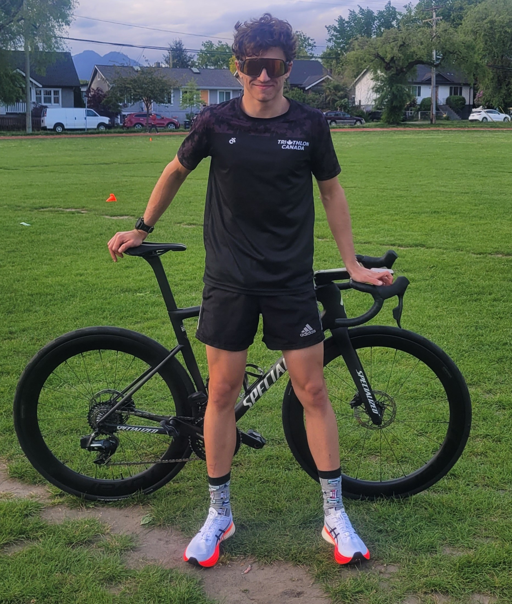
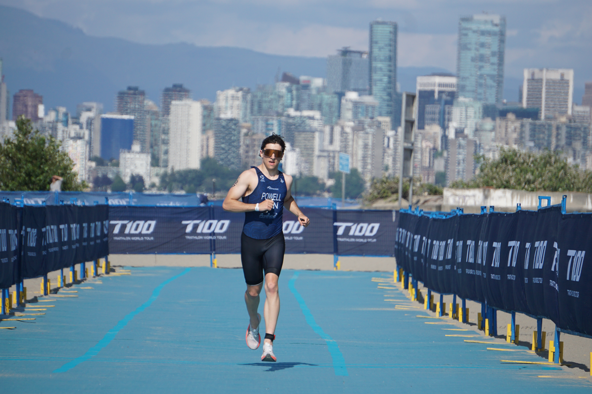
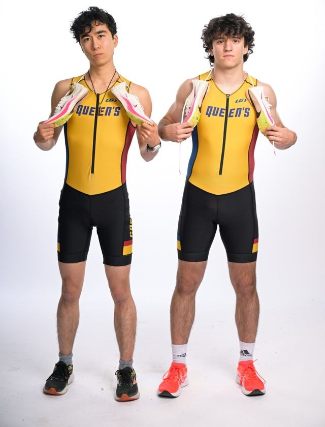

Triathlon
Racing, training, and varsity athletics.
I’m a current Queen’s varsity triathlon athlete and VP of Logistics for the team. Before Queen’s, I raced at Canadian Junior Nationals and competed in high performance junior triathlon. Endurance sport has shaped how I approach my work as an engineer, consistancy, long term planning, and staying calm under pressure.


